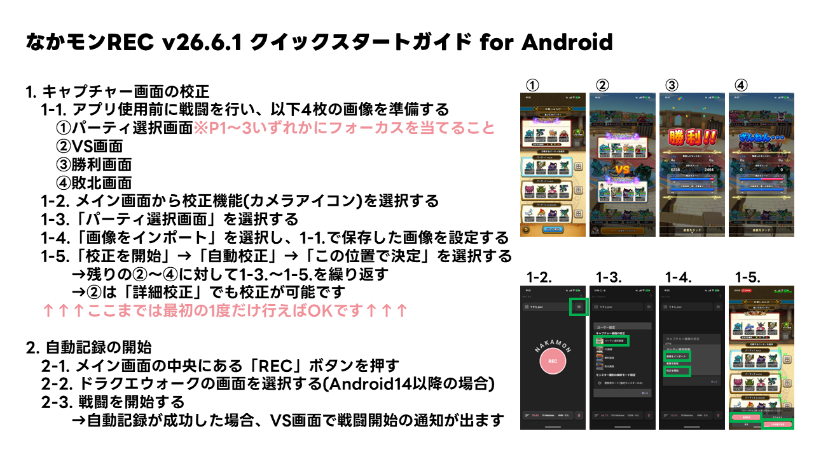
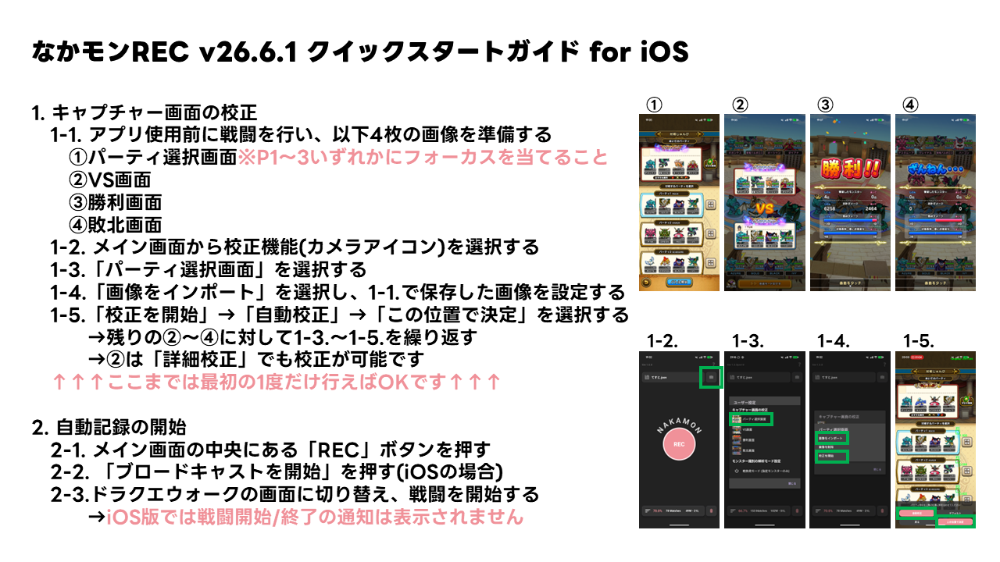
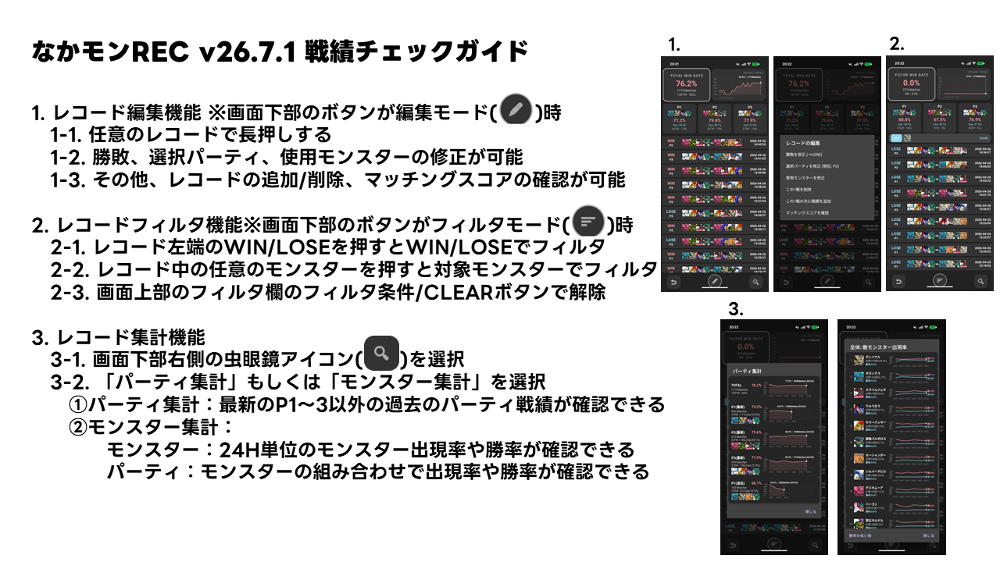
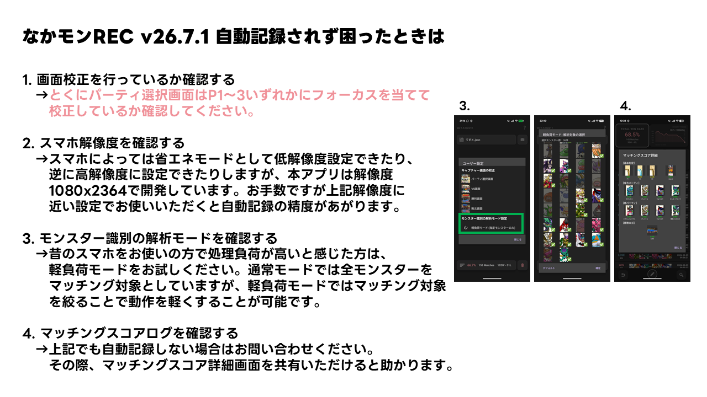

対応バージョン: v26.8.2 / Last updated: 2026-08-16
なかモンREC (NakamonREC) の基本操作・トラブルシューティングをまとめたヘルプページです。 ご利用のプラットフォームに合わせて該当セクションをご覧ください。




iPhone SE (第2/第3世代) をお使いの方へ: v26.8.2 以降で対応しています。校正用スクリーンショットは「パーティ1か2を選択した状態」で 「一覧をスクロールせずに」撮影してください (パーティ3の位置は自動で補完されます)。 条件を満たさない画像は校正時にメッセージでお知らせします。